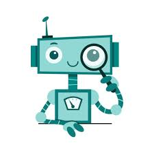

Le Développeur Bot est un membre essentiel de toute équipe technique spécialisée dans l’automatisation et la création de systèmes intelligents...
Chaque bot repose sur une structure technique précise. Le développeur doit choisir le langage de programmation adapté, mettre en place une base de données si nécessaire, gérer les permissions, sécuriser les accès et prévoir les éventuelles erreurs.
L’une des responsabilités majeures du Développeur Bot est la mise à jour régulière du système. Les plateformes évoluent, les besoins des utilisateurs changent, et de nouvelles fonctionnalités doivent être intégrées.
Le développeur bot doit également posséder de solides compétences en résolution de problèmes. Lorsqu’un dysfonctionnement apparaît, il doit identifier rapidement l’origine du bug et appliquer une solution efficace.
La sécurité est un autre pilier fondamental de ce rôle. Les bots peuvent gérer des données sensibles ou des permissions administratives. Le développeur doit donc implémenter des systèmes de protection robustes.
Enfin, le Développeur Bot représente la base technique du projet. Sans lui, aucune évolution n’est possible. Il assure la stabilité, la performance et l’évolution continue du système.